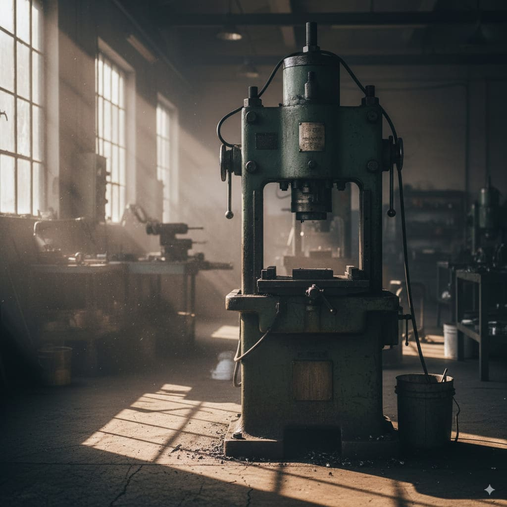
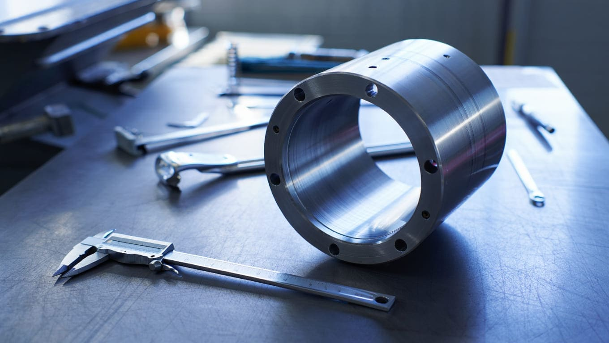
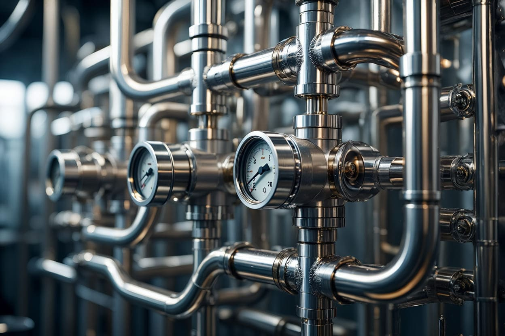

50 años de experiencia y dos generaciones de ingenieros a tu servicio en la industria metalmecánica
Conócenos
Montaje, alineación, reparación y fabricación de sistemas hidráulicos y neumáticos
Nuestros servicios
Expertos en tuberías y sistemas hidráulicos para equipos americanos y europeos
ContáctanosMás de cinco décadas perfeccionando procesos industriales con un enfoque en la precisión y la durabilidad.
Contamos con un legado de 50 años y dos generaciones de ingenieros dedicados a la excelencia metalmecánica.
Implementamos soluciones de diagnóstico y reparación utilizando equipos de medición con estándares internacionales.
Desde la conceptualización hasta el montaje final, ofrecemos un servicio de punta a punta para sus activos.
Proyectos de cimentación y obra civil especializados para la instalación de maquinaria de alta complejidad.
Montaje, alineación y nivelación precisa de maquinaria para garantizar un funcionamiento óptimo y seguro.
Servicio completo de reparación mecánica y eléctrica para todo tipo de equipos industriales.
Expertos en la fabricación y reparación de sistemas hidráulicos, neumáticos y de servicios a medida.
Suministro e instalación de tuberías hidráulicas para sistemas americanos y europeos.
Una herencia de ingeniería y pasión, forjada a través de dos generaciones
Con una profunda pasión por la mecánica, el Ing. Andrés Tijerina Cruz funda "Talleres Tijerina", sentando las bases de una empresa familiar dedicada a ofrecer soluciones robustas y confiables para la industria.
Forjado directamente por su padre, el Ing. José Guadalupe asume el liderazgo como CEO. Combina 50 años de experiencia heredada con un enfoque en las nuevas tecnologías, transformando la empresa para ofrecer soluciones integrales de vanguardia.
Hoy, SHT es sinónimo de confianza y precisión en la industria metalmecánica. Nuestra historia es la garantía de que cada proyecto se maneja con un profundo conocimiento técnico y un compromiso inquebrantable con la calidad.
Ponte en contacto con nosotros para cotizaciones, preguntas o para planificar tu próximo proyecto.